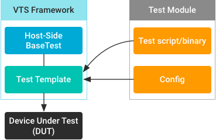
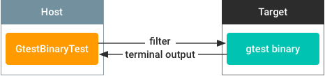

AOSP includes test templates for test modules that are not host-side Python subclass of VTS runner's BaseTest.

Developers can use these templates to minimize the effort involved in integrating such tests. This section covers configuring and using the test templates (located in the VTS testcases/template directory) and provides examples for commonly used templates.
BinaryTest template
Use the BinaryTest template to integrate tests that execute on target device in VTS. Target-side tests include:
- C++ based tests compiled and pushed to device
- Target-side Python tests compiled as binaries
- Shell scripts executable on devices
These tests can be integrated into VTS with or without the BinaryTest template.
Integrating target-side tests with BinaryTest template
The BinaryTest template is designed to help developers easily integrate
target-side tests. In most cases, you can add a few simple lines of
configuration in AndroidTest.xml. Example configuration from
VtsDeviceTreeEarlyMountTest:
<configuration description="Config for VTS VtsDeviceTreeEarlyMountTest."> ... <test class="com.android.tradefed.testtype.VtsMultiDeviceTest"> <option name="test-module-name" value="VtsDeviceTreeEarlyMountTest"/> <option name="binary-test-source" value="_32bit::DATA/nativetest/dt_early_mount_test/dt_early_mount_test" /> <option name="binary-test-source" value="_64bit::DATA/nativetest64/dt_early_mount_test/dt_early_mount_test" /> <option name="test-timeout" value="5m"/> </test> </configuration>
In this configuration:
binary-test-sourceandbinary-test-typeare template-specific.- Specifying the test binary source's relative host path enables the template to handle preparation, file pushing, test execution, result parsing, and cleanup.
- The template contains test case creation-related methods for subclasses to override.
- The template assumes one test case per test binary module, and the binary source file name is used as test case name by default.
Configuration options
The BinaryTest template supports the following configuration options:
| Option name | Value type | Description |
|---|---|---|
| binary-test-source | strings | Binary test source paths relative to vts test-case directory on
host. Example: DATA/nativetest/test |
| binary-test-working-directory | strings | Working directories (device-side path). Example: /data/local/tmp/testing/ |
| binary-test-envp | strings | Environment variables for binary. Example: PATH=/new:$PATH |
| binary-test-args | strings | Test arguments or flags. Example: --gtest_filter=test1 |
| binary-test-ld-library-path | strings | LD_LIBRARY_PATH environment variable.Example: /data/local/tmp/lib |
| binary-test-disable-framework | boolean | Run adb stop to turn off the Android Framework before test.
Example: true |
| binary-test-stop-native-servers | boolean | Stop all properly configured native servers during the testing. Example:
true |
| binary-test-type | string | Template type. Other template types extend from this template, but you
don't have to specify this option for this template because you already
specified binary-test-source. |
For options with value type strings, you can add multiple values
by repeating the options in the configuration. For example, set
binary-test-source twice (as shown in the
VtsDeviceTreeEarlyMountTest example).
Test tags
You can add test tags by prefixing them to options with strings
values and using :: as the delimiter. Test tags are especially
useful when including binary sources with the same name but with different
bitness or parent directories. For example, to avoid file push or result name
collision for sources with the same name but from different source directories,
you can specify different tags for these sources.
As shown in the VtsDeviceTreeEarlyMountTest example with the
two dt_early_mount_test sources, the test tags are the
_32bit:: and _64bit:: prefixes on
binary-test-source. Tags ending with 32bit or
64bit automatically mark the tests as available to one ABI bitness;
i.e. tests with the tag _32bit are not executed on 64-bit ABI. Not
specifying a tag is equal to using a tag with an empty string.
Options with the same tags are grouped and isolated from other tags. For
example, binary-test-args with the _32bit tag is
applied only to binary-test-source with the same tag and executed
in binary-test-working-directory with the same tag. The
binary-test-working-directory option is optional for binary tests,
allowing you to specify a single working directory for a tag. When the
binary-test-working-directory option is left unspecified, default
directories are used for each tag.
The tag name is directly appended to test case name in the result report.
For example, test case testcase1 with tag _32bit
appears as testcase1_32bit in the result report.
Integrating target-side tests without BinaryTest template
In VTS, the default test format is host-side Python tests extended from BaseTest in VTS runner. To integrate target-side tests, you must first push the test files to device, execute the tests using shell commands, then parse the results using host-side Python scripts.
Pushing test binaries
We recommend pushing files using VtsFilePusher target preparer.
Example:
<target_preparer class="com.android.compatibility.common.tradefed.targetprep.VtsFilePusher">
<option name="push" value="DATA/test->/data/local/tmp/test"/>
</target_preparer>
The VtsFilePusher does the following:
- Checks device connectivity.
- Determines the absolute source file path.
- Pushes the files using
adb pushcommand. - Deletes the files after tests complete.
Alternatively, you can push files manually using a host-side Python test script that follows a similar procedure.
Running tests
After pushing files to the device, run the test using shell commands in a host-side Python test script. Example:
device = self.android_devices[0] res = device.shell.Execute(["chmod a+x /data/local/tmp/test", "/data/local/tmp/test"]) asserts.AssertFalse(any(res[return_codes]))
GtestBinaryTest template
The GtestBinaryTest template hosts GTest test binaries, each of which usually contains multiple test cases. This template extends the BinaryTest template by overriding setup, test case creation, and result parsing methods, so all BinaryTest configurations are inherited.
GtestBinaryTest adds the option gtest-batch-mode:
| Option name | Value type | Description |
|---|---|---|
| binary-test-type | string | Template type. Uses the value gtest. |
| gtest-batch-mode | boolean | Run Gtest binaries in batch mode. Example: true |
In general, setting gtest-batch-mode to true
increases performance while decreasing reliability slightly. In VTS compliance
tests, many modules use batch mode to improve performance. For reliability
however, if the mode is unspecified it defaults to non-batch.
Non-batch mode
Non-batch mode makes individual calls to GTest binary for each test case. For example, if the GTest binary contains 10 test cases (after filtering by host side configuration), the binary is called 10 times on device shell each time with a different test filter. For each test case, a unique GTest result output XML is generated and parsed by the template.
The advantages of using non-batch mode include:
- Test case isolation. A crash or hang in one test case does not affect other test cases.
- Granularity. Easier to get per-test-case profiling/coverage measurement, systrace, bugreport, logcat, etc. Test results and logs are retrieved immediately after each test case finishes.
The disadvantages of using non-batch mode include:
- Redundant loading. Each time GTest binary is called, it loads related libraries and performs initial class setups.
- Communication overhead. After a test completes, the host and target device communicate for result parsing and next commands (future optimizations possible).
Batch mode
In GTest batch mode, the test binary is called only once with a long test filter value containing all test cases filtered by host-side configuration (this avoids the redundant loading issue in non-batch mode). You can parse test results for GTest using output.xml or using terminal output.
When using output.xml (default):
As in non-batch mode, the test result is parsed through GTest output xml file. However, because the output xml is generated after all tests are completed, if a test case crashed the binary or device no result xml file is generated.
When using terminal output:

While GTest is running, it prints the test log and progress to the terminal in a format that can be parsed by the framework for test status, results, and logs.
The advantages of using batch mode include:
- Test case isolation. Provides the same level of test case isolation as non-batch mode if the framework restarts the binary/device after a crash with a reduced test filter (excluding finished and crashed test cases).
- Granularity. Provides the same test-case granularity as non-batch mode.
The disadvantages of using batch mode include:
- Maintenance cost. If the GTest logging format changes, all tests will break.
- Confusion. A test case can print something similar to GTest progress format, which can confuse the format.
Because of these disadvantages, we have temporarily removed the option to use command line output. We will revisit this option in the future to improve the reliability of this function.
HostBinaryTest template
The HostBinaryTest template includes host-side executables that do not exist in other directories or in Python scripts. These tests include:
- Compiled test binaries executable on host
- Executable scripts in shell, Python, or other languages
One example is the VTS Security SELinux policy host-side test:
<configuration description="Config for VTS Security SELinux policy host-side test cases">
...
<test class="com.android.tradefed.testtype.VtsMultiDeviceTest">
<option name="test-module-name" value="VtsSecuritySelinuxPolicyHost"/>
<option name="binary-test-source" value="out/host/linux-x86/bin/VtsSecuritySelinuxPolicyHostTest" />
<option name="binary-test-type" value="host_binary_test"/>
</test>
</configuration>
HostBinaryTest does not extend the BinaryTest template but does use similar
test configurations. In the above example, the binary-test-source
option specifies a host-side relative path to the test executable, and
binary-test-type is host_binary_test. Similar to
BinaryTest template, the binary filename is used as the test case name by
default.
Extending existing templates
You can use templates directly in the test config to include non-Python tests or extend them in a subclass to handle specific test requirements. Templates in the VTS repo have the following extensions:
Developers are encouraged to extend any existing template for any specific test requirements. Common reasons to extend templates include:
- Special test setup procedures, such as preparing a device with special commands.
- Generating different test cases and test names.
- Parsing results by reading command output or using other conditions.
To make it easier to extend existing templates, the templates contain methods specialized for each functionality. If you have improved designs for existing templates, we encourage you to contribute to the VTS code base.